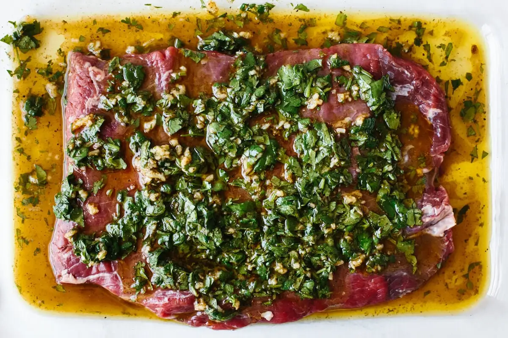

Lisa's Favorite Carne Asada Marinade

A Spicy Citrus and Soy Flank Steak Marinade
Carne asada, or "grilled meat," is a Mexican dish that features a marinated flank steak that is grilled. This recipe boasts of a flavorful 24-hour marinade for a perfect culinary delight.
Ingredients
Marinade:
- 1 bunch fresh cilantro, chopped
- ¾ cup orange juice
- ½ cup lemon juice
- ⅓ cup lime juice
- ½ cup soy sauce
- 4 cloves garlic, minced
- 1 tablespoon chili powder
- 1 teaspoon finely chopped chipotle pepper
- 1 tablespoon ground black pepper
- 1 tablespoon ground paprika
- 1 tablespoon ground cumin
- 1 teaspoon dried oregano
- ½ cup olive oil
Carne Asada:
Steps
- Combine the lemon, lime, and orange juices in a large glass or ceramic bowl. Add cilantro, garlic, soy sauce, chili powder, cumin, black pepper, paprika, chipotle pepper, and oregano. Stir to combine.
- Whisk in olive oil slowly. Remove 1 cup of the marinade and place in a small bowl, cover with plastic wrap, and refrigerate for use after steak is cooked.
- Place steak between two sheets of heavy plastic (or resealable freezer bags) on a solid, level surface. Pound steak with the smooth side of a meat mallet until it's 1/4 inch thick.
- Poke steak all over with a fork. Place in a large bowl with marinade and cover. Marinate in refrigerator for 24 hours.
- When ready to cook, preheat an outdoor grill to medium-high heat. Lightly oil the grate.
- Remove steak from the marinade and shake off excess. Discard the remaining marinade.
- Cook steak to desired doneness -- about 5 minutes per side for medium-rare.
- Remove steak from grill and slice across the grain.
- Place on a serving platter and pour the reserved, unused marinade over top. Serve immediately.